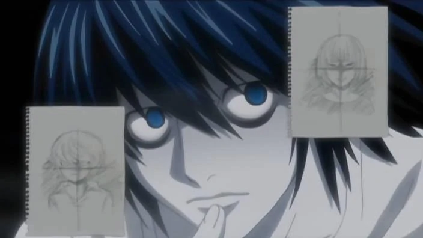
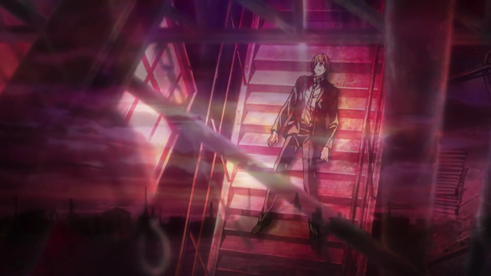

Pëmbledhja e historisë

Momenti i parë kur Ryuk shfaqet
Në Tokio, një nxënës i shkollës së mesme të pakënaqur me emrin Light Yagami
gjen "Shënimin e Vdekjes", një
zi e mistershme
fletore e cila mund të vrasë këdo për sa kohë që përdoruesi di të dy emrin
dhe fytyrën e shënjestrës.
Fillimisht
i tmerruar nga
fuqia e tij si perëndia, Light shqyrton mundësitë e aftësive të Shënimit të
Vdekjes dhe vret një profil të
lartë
Kriminelët japonezë, duke synuar kriminelët ndërkombëtarë. Pesë ditë pasi
zbulova fletoren, Light
është
vizituar nga Ryuk, një "Shinigami" dhe pronari i mëparshëm i Shënimit të Vdekjes. Ryuk,
i padukshëm për këdo
që nuk e ka bërë
preku fletoren, zbulon se ai e lëshoi fletoren në botën njerëzore nga mërzia dhe
është i kënaqur
nga
veprimet e dritës.

Light me Death note e tij në dorë
Ndërsa kriminelët në të gjithë botën vdesin nga aksidente të pashpjegueshme dhe
sulme në zemër, sugjerojnë
mediat globale
se a
organizatori i vetëm është përgjegjës për vrasjet misterioze dhe vendosi emrin
"Kira" (キ ラ, japonisht perkthimi i fjalës angleze "killer"). Duke shpresuar të kapë Kira,
Interpol kërkon
ndihmën e
një
detektiv enigmatik i këshillimit, i njohur si L, për të ndihmuar hetimin e tyre. Duke zbritur se
Kira është
bazuar
Japoni,
L mashtron Light për të zbuluar se ai është në rajonin Kanto të Japonisë
duke e manipuluar atë për të vrarë
një mashtrues.
I furishëm, Light zotohet të vrasë L, të cilin ai e konsideron si pengues në planet e
tij. L dedukton se
Kira ka brenda
njohuri
i hetimit të policisë japoneze, duke u udhëhequr nga babai i Lightës, Soichiro Yagami.
Nën dyshimin se
"Kira" mund të ketë lidhje familjare me anëtarët e hetimit "Kira", L cakton një ekip
të agjentëve të FBI për
monitorojnë familjet e atyre që kanë lidhje me hetimin dhe L mëson mjaftueshëm për
të caktuar Light si
i dyshuari kryesor. Rreth kësaj kohe, Light mbaron shkollën e mesme në kolegj. L rekruton
Light në Kira
Task Forca, me secilin që përpiqet të bëjë që tjetri të zbulojë informacione
thelbësore.

L duke u menduar
Aktorja-modelja Misa Amane, pasi ka marrë një Shënim të dytë Death nga një Shinigami
me emrin Rem, bën një
marrëveshje me
Rem
për sytë Shinigami, të cilët e lejojnë atë të vrasë duke ditur vetëm
fytyrën, me koston e gjysmës së jetës
së saj. Duke kërkuar
te
e kanë bërë Light të dashurin e saj, Misa zbulon identitetin e Lightës si Kira
origjinale, por Light ka një
tjetër
motivi: ai synon të përdorë sytë e Misa Shinigami për të dalluar emrin e
vërtetë të L-së. L konkludon se
Misa ka të ngjarë
e dyta Kira dhe e arreston atë. Rem kërcënon të vrasë Light nëse nuk gjen
një mënyrë për të shpëtuar Misën.
Light
rregullon
një skemë në të cilën ai dhe Misa humbin përkohësisht kujtimet e tyre për
Shënimin e Vdekjes, dhe ka që Rem
të kalojë Vdekjen
shënim
tek një individ më pak i drejtuar nga morali, Kyosuke Higuchi i Grupit Yotsuba. Me kujtimet e
Shënimit të
Vdekjes
i fshirë, Light bashkohet me hetimin dhe, së bashku me L, nxjerrin identitetin e Higuchi dhe e
arrestojnë
atë. Light
rifiton kujtimet e tij dhe përdor Shënimin e Vdekjes për të vrarë Higuchi, duke rifituar
posedimin e librit.
Pas
rivendosjen
Kujtimet e Misës, Light e udhëzon atë të fillojë të vrasë si Kira, duke
bërë që L të hedhë dyshime për Misa.
Me
Light
duke insinuuar hetimin do të çonte në kapjen dhe ekzekutimin e Misa-s, Rem e kupton planin e Lightve
gjatë
gjithë kohës
ishte
ta sakrifikojë veten për të vrarë L, pasi një Shinigami mund të mos vrasë të
tjerët për të parandaluar
vdekjen e një njeriu.
Pas
Rem vret L, ajo shpërbëhet dhe Light merr Shënimin e saj të Vdekjes. Task forca nuk njofton
vdekjen e L-së
dhe
pranon që Light të veprojë si L. e re. Me Light që punon si L dhe Kira, hetimi ngec
por
normat e krimit vazhdojnë të bien pasi ai nuk ka më kërcënim për kapje.

Misa sebashku me Rem
Katër vjet më vonë, kanë lindur kultet që adhurojnë Kirën. Dy të rinj,
të rritur si pasardhës të mundshëm të
L,
janë
zbuloi: Afër dhe Mello. Të vetëdijshëm se L ka vdekur, ata e konsiderojnë Light, L
aktuale, si një të
dyshuar kryesor.
Mello,
me ndihmën e mafies, rrëmben motrën e Lightës, duke rezultuar në vdekjen e babait të
tij gjatë një misioni
shpëtimi. Si
dyshimi bie përsëri mbi Misa, Light ia kalon Shënimin e Vdekjes së Misa një
mbështetësi të zjarrtë të Kira,
Teru Mikami.
Ai
gjithashtu emëron transmetuesin e lajmeve Kiyomi Takada si zëdhënësin publik të Kira.
Duke kuptuar që Takada
është e lidhur me
Kira, Mello e rrëmben. Takada vret Melon por vritet nga Light. Pranë nxjerr lidhjen e Mikamit me
Kira-n
dhe
rregullon një takim midis Lightës dhe anëtarëve aktualë të Task Forcës Kira.
Light përpiqet ta vrasë Mikamin
Afër
si dhe të gjithë anëtarët e task forcës, por Shënimi i Vdekjes i Mikami nuk arrin
të funksionojë, pasi është
zëvendësuar me një
mashtrim
Duke lexuar emrat që Mikami kishte shkruar, vetëm Light mungon, gjë që vërteton se Light
është Kira. Light
është
plagosur rëndë në një përleshje dhe i lutet Ryuk të shkruajë emrat e të
gjithë të pranishmëve. Në vend të
kësaj shkruan Ryuk
poshtë
Emri i Lightës në Shënimin e tij të Vdekjes, pasi Light e deklaron veten si zot i botës
së re para se të
vdesë.

Light kundra Near
Tre vjet më vonë, Near, tani duke funksionuar si L-ja e re, merr fjalën se një Kira e re
është shfaqur.
Dëgjimi
se
Kira e re po vret rastësisht njerëz, Near arrin në përfundimin se Kira e re është
një kërkuese e vëmendjes
dhe
denoncon
Kira e re si "e mërzitshme" dhe nuk ia vlen të kapet. Një Shinigami me emrin Midora i afrohet
Ryuk dhe i jep
një
mollë
nga sfera njerëzore, në një bast për të parë nëse një njeri i
rastësishëm mund të bëhet Kira e re, por
Midora humbet bastin
kur
njeriu shkruan emrin e tij në Shënimin e Vdekjes pasi ka dëgjuar njoftimin e Near. Ryuk i
thotë Midorës se
jo
njeriu do ta tejkalonte Light si Kira e re.

Light në momentet e tij të fundit